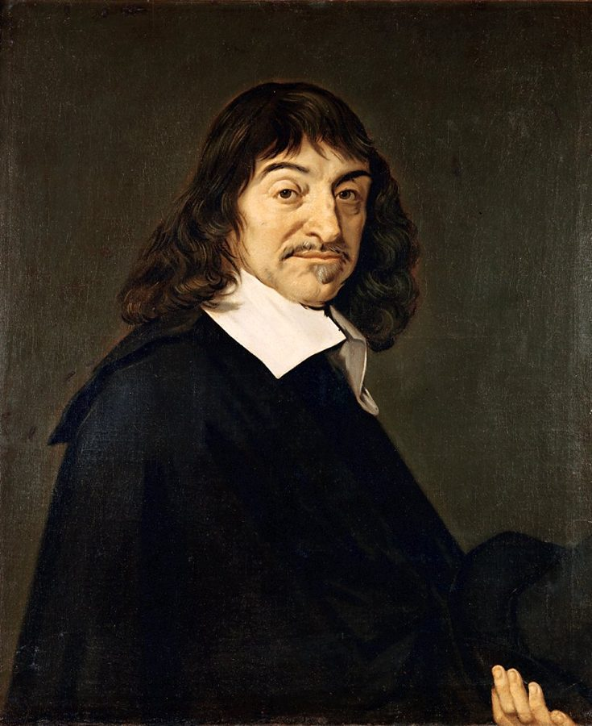
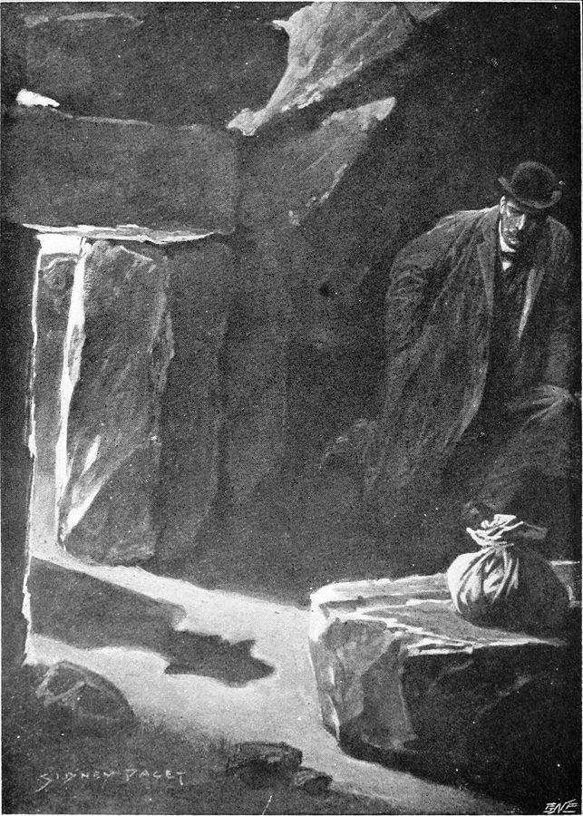
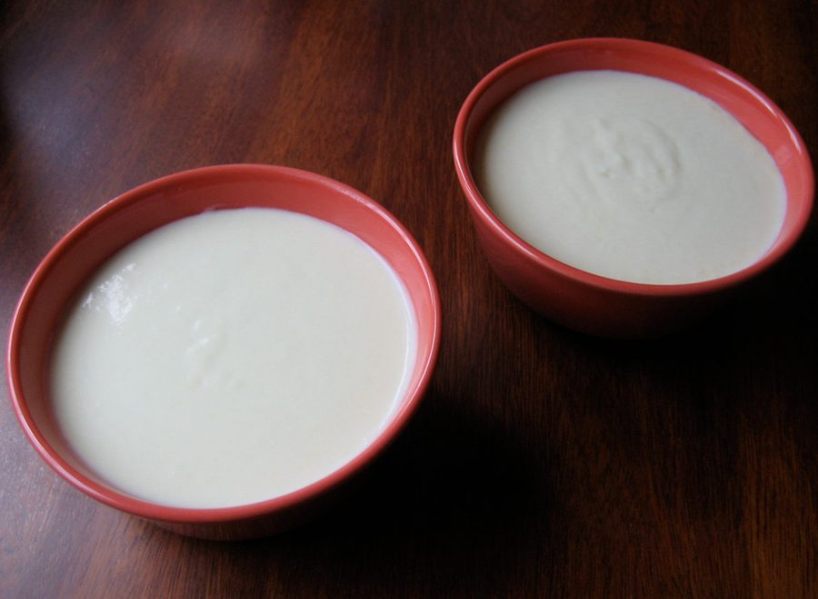
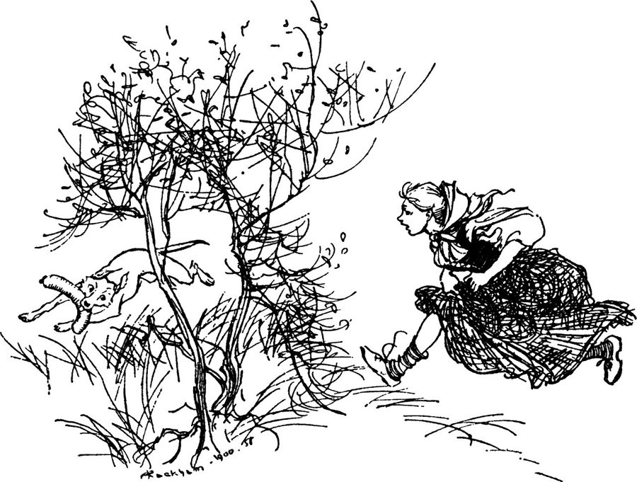
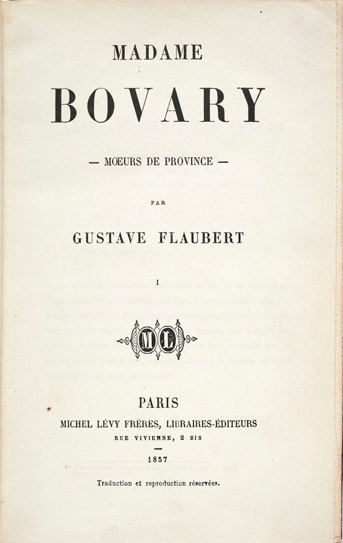

这一章在做什么
「最糟的一天」的上半场。作者瞒着同事在写电影剧本，午饭时告诉了大学时的老师，挨了一顿训。后半章是斜体：费曼讲自己试写童话的事，再比较科学家和作家的想象力。
前半读对话里的口气，后半抓住一个词：checked。看医生的事留到下一章。
这一章的时间线
前一晚
熬夜写剧本
约 10:00
起床，喝浓咖啡
对他算「早起」
11:30
Athenaeum
和老教授吃饭，挨训
饭后
去看医生
（第 18 章）
后来：找费曼聊这件事（第 42 段起的斜体）
本站示意图。第 1 到 40 段是同一天上午的事；第 41 段往后跳出了这一天，是「后来」和费曼的谈话。
背景：作者默认你知道的事
这一章没有物理。难的是口语，和几样美国读者不用解释的东西。先认人。
老教授 Professor Breadcrumb 作者本科时的老师，书里没给名字。「面包屑教授」是作者在第 41 段起的外号，因为他胡子上粘着一粒面包屑。
学生服务员 the student waiter 在教工俱乐部打工的学生。他以为这一桌是父子俩。
夜班清洁工 the night janitor 只出现一句。作者没和同行聊成物理，倒从他那里听了不少墨西哥职业足球。
费曼 Richard Feynman 第 42 段起全是他的原话，谈写作和想象力。
笛卡尔，和「不到中午不起床」

笛卡尔画像，仿弗兰斯·哈尔斯（Frans Hals）的原作，现藏卢浮宫。
仿 Frans Hals，公有领域，维基共享资源 René Descartes（1596–1650），法国人。程序员天天在用他的东西：平面直角坐标系的英文就叫 Cartesian coordinates ，Cartesian 来自他名字的拉丁写法。「我思故我在」也是他的话。
他爱赖床想问题是出了名的；「从不在中午前起床」是书里的说法。作者拿他给自己十点起床撑腰，是玩笑。
《巴斯克维尔的猎犬》、Airplane! 和 lowbrow

西德尼·佩吉特（Sidney Paget）为《巴斯克维尔的猎犬》画的插图，1902 年。福尔摩斯故事在读者心里的样子，大半来自他的画。
Sidney Paget，公有领域，维基共享资源 The Hound of the Baskervilles 是柯南·道尔的福尔摩斯长篇，1901 至 1902 年连载。作者和邻居反复放的是它的老电影版（第 6 章讲过），边看边喊自己编的台词。
Airplane! （1980）是一部恶搞灾难片的喜剧：演员一本正经，台词荒唐。作者想照这个路子恶搞福尔摩斯。
作者想象中，同行心里的那把尺
0
highbrow
lowbrow
物理：该痴迷的正事
写文学：勉强能接受
写电影剧本：零以下
作者在这
所以不敢说
本站示意图，按第 7 段的说法画的。brow 是眉毛、额头：highbrow 指高雅、有学问的趣味，lowbrow 指通俗、不入流的。作者把「低俗」当成一把有刻度的尺，剧本排在零以下。
饭桌上：work-study 和 vichyssoise

vichyssoise：土豆和韭葱加奶油做的浓汤，通常放凉了喝。
BocaDorada，CC BY-SA 2.0，维基共享资源 吃饭的地方是 Athenaeum，加州理工的教工俱乐部（第 3 章讲过）。work-study 是美国大学的勤工俭学：学生在校内打工挣钱，算助学金的一部分，所以服务员是「打扮整齐的学生」。
vichyssoise 读 /ˌvɪʃiˈswɑːz/，名字是法语，菜单上显得讲究。作者提它，只是想岔开话题。
格林童话和《包法利夫人》

阿瑟·拉克姆（Arthur Rackham）给英文版格林童话画的插图。
Arthur Rackham，公有领域，维基共享资源 Grimm’s Fairy Tales 是格林兄弟收集整理的德国民间故事，第一卷 1812 年出版。费曼拿它练手，是觉得童话有魔法，怎么编都行。
Madame Bovary （1857）是法国作家福楼拜的小说，写一个外省医生的妻子，文学史上常把它当作写实小说的标杆。费曼说自己「历史不一定记得准」，大意没错。

《包法利夫人》1857 年初版的扉页。副标题 Mœurs de province 意思是「外省风俗」。
公有领域，维基共享资源 斜体那八段怎么读
第 42 到 49 段是录音整理稿。费曼边想边说，句子会改口、重复、缺成分。几个窍门：
一，他嘴里的 I said, “…” 多半是「我心想」，引号里是他对自己说的话。二，you 是泛指，指任何一个科学家或画家。三，they 会换主人：第 43 段里先指童话，再指写童话的人。四，God 是比方，他自己马上解释了：God 就是实验。
科学家的想象：有人把关（checked）
想象一个解释
「我猜是这样」
推出一个预言
「那就该看到这个」
别人去看
做实验
「实验之神」
裁决
incorrect：猜错了，回去重想
so far so good：暂时过关
作家的想象：没有外部裁判
想象一个故事
写什么都行
自己满不满意
艺术上、审美上
到此为止。
没有谁说「这个不是真的」
本站示意图，画的是费曼在第 46、47 段打的比方。第 48 段他又假设了一位「审美之神」：要是画画也有这么一个裁判，那才像科学。
词与短语
词条按在书里出现的顺序排。斜体小字是它所在的那句话里的几个词，方便你在纸质书上找到。
have no inkling
… I had no inkling that it …
一点没料到
inkling：一丝预感。几乎只用在否定句里。
be in town
… my undergraduate days was in town. He …
到本地来了
不是「在镇上」。指外地人这几天正好来到说话人所在的城市。
run off to
… I had to run off to the …
赶着去
不是真的跑。off 表示「离开这里」。第 31 段又用了一次。
slacker
… Makes me sound like a slacker, but …
懒汉，混日子的人
slack 是松弛。句首省了主语 That：口语里常见。
well past midnight
… used to working well past midnight. It’s …
过了半夜很久
well 在介词前 = 远远地、大大地。well over a hundred 同理。
earn someone a reputation
… and it earned him the reputation of …
给他招来了……的名声
earn 这里是「使某人得到」，好名声坏名声都能用。it 指赖床这件事。
Not bad for …
… and philosophy. Not bad for a lazy …
作为一个……，算很不错了
for = 就……而言。Not bad 是往小里说的夸奖，这里带着反讽：这哪是懒人。
party hard
… work late, and party hard. I …
玩得很疯
party 作动词：聚会、喝酒。hard 是「猛」，不是「困难」。
in these respects
… at least in these respects I could …
在这几方面
respect 这里是「方面」，不是「尊重」。指晚睡、晚起、爱玩这几样。
given my hours
… like young Descartes. Given my hours, and …
考虑到我那种作息
given 作介词：鉴于。hours 指一个人每天活动的时间段，keep late hours = 晚睡晚起。
contemporary
… my peers, both contemporary and through the …
同时代的
不是「当代艺术」的当代。peers 是同行；作者说他的同行既有活着的，也有历代的。
end up doing
… talking physics, I ended up learning quite …
结果却……
本来没打算，最后落到这一步。
keep someone up
… What had kept me up late the …
让某人睡不了觉
up = 醒着。整句主语是 What 引出的从句：让我熬夜的那件事，是……
diversion
… revival of an old diversion—writing. It …
消遣，解闷的事
不是「改道」。revival 是重新拾起。
it struck me
… And then it struck me—this was a …
我突然想到
strike 的过去式。念头「击中」了我。第 8 段 the first thing that struck me 是「最先让我注意到的」。
dying to be made fun of
… was a film dying to be made …
巴不得被人拿来取笑
be dying to = 极其想，和死无关。make fun of = 取笑。意思是这片子太适合恶搞了。
along the lines of
… the film, along the lines of Airplane, …
照着……的路子
come out
… five times when it came out a …
（电影）上映
书出版、唱片发行也用 come out。
on and off
… writing short stories on and off since …
断断续续地
像开关一会儿开一会儿关。也说 off and on。
just plain snobs
… missionaries, or just plain snobs. Writing …
根本就是势利眼
plain 在这里是加强语气的副词：纯粹、十足。前面的 missionaries（传教士）指把物理当信仰、容不得别的。
come in below zero
… would definitely come in below zero on …
排在零以下
come in + 名次：比赛里得第几。come in last = 排最后。
lowbrow
… zero on the lowbrow scale. I …
低俗的，不入流的
反义词 highbrow。见上面那张图。
portly
… as I had left him—portly, avuncular, …
发福的，胖墩墩的
比 fat 客气，多用于中老年男人。
avuncular
… avuncular, with bushy gray hair …
像叔叔伯伯那样和气的
词根是拉丁语的「舅舅」。bushy：又密又乱的。
work-study
… dressed-up student on work-study, brought us …
勤工俭学
on work-study = 靠这个项目打工。dressed-up 是穿得正式，不是化了装。
file someone in the camp of
… I filed him in the camp of …
把他归到……那一派
file 是归档，camp 是阵营。和露营无关。
the oblivious
… camp of the oblivious, as opposed …
压根不知情的那些人
the + 形容词 = 一类人。as opposed to = 而不是。两派：不知道弦理论还有人做的，和知道但不信的（skeptics）。
establish your name
… To establish your name, your research …
打出名气
name = 名声。
be cut out for
… “Maybe I’m not cut out for this,” …
天生是干……的料
像布料按某个样子裁好了。多用于否定：not cut out for = 不是这块料。
believe in
… “Look, I believe in you. Hang …
相信你能行
believe you 是相信你说的话；believe in you 是对你这个人有信心。句首的 Look 是「听我说」。
Hang in there
… in you. Hang in there.” …
撑住，别放弃
给处境艰难的人打气的话。
Of course not
… “Of course not.” The way he …
当然没想过
接的是上一句否定：你当然没想过干别的。口气见下面「值得停下来的句子」。
anything but
… felt me incapable of anything but physics, …
除了……以外的任何事
but = 除了。incapable of anything but physics：除了物理什么都干不了。
procedure
… this recent procedure you had was …
（医疗上的）手术、操作
不是「程序、流程」。医院里说 a procedure，是手术的委婉说法。cadence 是说话的抑扬顿挫。
Why on earth
… “Why on earth would you do …
你到底为什么
on earth 放在疑问词后面加强语气。vehemence：激烈的情绪。
’Cause
… “I don’t know. ’Cause I like …
因为（because 的口语缩略）
句尾的 I guess 是「大概吧」，说得很没底气。
lame attempt
… and no lame attempt to change …
很蹩脚的尝试
lame 本义是瘸，口语里是「站不住脚、没说服力」。a lame excuse = 烂借口。
ever the optimist
… of it, but, ever the optimist, I …
我这人向来乐观
ever the + 名词：一贯是这种人。插入语，自嘲。
owe it to yourself
… “you owe it to yourself, and …
你有责任对自己（做到）
owe it to A to do B：为了对得起 A，应该做 B。it 是形式宾语，真正的内容是后面的 to keep at …
keep at
… of people, to keep at your physics. …
坚持做下去
at 表示对着一件事使劲。常说 Keep at it!
caught off guard
… I was caught off guard by his …
被弄得措手不及
guard 是防备。off guard = 没有防备。
tap into
… Yet he had tapped into my feelings …
正好触到，勾出
tap 本是接水龙头、接通管道。意思是他的话接通了作者心里早就有的自卑。
make something of your life
… have to make something of your life.” …
这辈子要干出点名堂
make something of … = 把……变成有价值的东西。长辈训话的常用句。
a knowing smile
… waiter flashed me a knowing smile. He …
一个「我懂」的笑
knowing 作形容词：心照不宣的。flash 是很快地亮一下。服务员以为自己看懂了：当爹的在训儿子。
skip
… omelet, too, but skipped the vichyssoise. …
不要，略过
本义是跳过。下一句是作者的自嘲：他不肯听一个「思想变态」推荐的菜。
take up residence
… fresh crumb took up residence in his …
住了下来
正式用语，说人搬进某处定居。用在一粒面包屑上，是故意大词小用。
tirade
… Professor Breadcrumb’s tirade with amusement. Stuck …
长篇的斥责
读 /ˈtaɪreɪd/。Stuck in … 这句没有主语和谓语，是在补充描述那位教授。
bug
… and his tirade really bugged me. Eventually, …
让我心烦
动词，口语。和程序里的 bug 同源：小虫子，引申为烦人。
that is to say
… given lectures; that is to say I …
也就是说
口语里改口用的。他先说「讲过课」，又补一句：就是我说话、别人录下来。后半句 talked where they’ve been recorded 不合语法，是口语实录。
an easy way out
… But that’s an easy way out. So …
省事的办法，取巧
way out 是出路。意思是：讲话让人录下来再印成书，不算真的写作。
for the fun of it
… asked them, for the fun of it, …
图个好玩
go about
… how I would go about writing fiction, …
着手做，怎么下手
how to go about doing = 该怎么着手。后面 who I respected very dearly 也是口语，书面会写 whom I respected greatly。
get ahold of
… I got ahold of the Grimm’s …
弄到一本
美国口语，书面写 get hold of。the Grimm’s Fairy Tales 多了个 the，也是随口说的。
there is all kinds of
… they want, there is all kinds of …
有各种各样的
口语。书面形式是 there are all kinds of。这一段两个 they：前一个指童话，后一个指写童话的人。
make up
… going to make one of these up.” …
编造
make up a story = 编一个故事。宾语 one of these 夹在中间。这一段出现三次。
not … but
… not make anything up but a combination …
除了……什么也编不出
but = 除了。这一段是全章最乱的口语：that 重复、句子没收尾。主干是：我重新组合读过的东西，可拼不出一个真正不同的情节。
twist
… of the plot, the twist was highly …
（情节的）转折
本义是拧。plot twist 是出人意料的转折。
That’s not to say
… That’s not to say I don’t have …
这并不是说
双重否定：不是说我没有想象力。即：我有。
one hell of a lot of
… it takes one hell of a lot …
多得要命的
a lot of 的粗口加强版，不是骂人。前面 it turns out it’s so different than you expect 也是口语，书面写 different from what you expect。
picture
… of imagination to picture the atom, …
在脑子里想出……的样子
动词。
in that
… from a writer’s in that it is …
不同之处在于
固定连词，后面接句子，说明「在哪一点上」。writer’s 后面省了 imagination。
checked
… in that it is checked. A scientist …
受到检验、被管住
check 有两层意思：核对，和制约。这里都沾：想出来的东西要拿去和实验对，对不上就作废。
so far so good
… “incorrect” or “so far so good.” God …
到目前为止还行
固定说法。注意它不是「正确」：实验只能说暂时没错。
agree
… “Oh no, that doesn’t agree.” You …
（和实验结果）对得上
不是「同意」。说两个数、理论和测量相符，用 agree。后面省了 with experiment。
That’s too bad
… don’t see it. That’s too bad. You …
那没办法，可惜了
不是「太糟糕了」那么重，是轻描淡写的遗憾。other guys 指别的科学家。
body of knowledge
… is not one body of knowledge which …
一整套知识体系
body of + 抽象名词 = 一大批、一整套。a body of evidence 是「大量证据」。
a big monstrous being
… together, a big monstrous being built by …
一个庞然大物
口语，可以两种读法：一个由大家一起建起来的巨物（being 是名词），或一个正在被建造的庞大东西。意思差不多：科学是众人往上垒的一整座建筑。
nothing but
… course it was nothing but the description …
只不过是
这里不是贬义。他是说：写的不过是个普通人，却写得那么好。
I’m not sure of my history
… I’m not sure of my history, but …
这段历史我记得不一定准
my history 不是「我的经历」，是「我掌握的历史知识」。后半句 was in the beginning of writing a novel about 是口语，意思是：它是最早写普通人的小说之一。
can’t stand
… I’ve looked at, I can’t stand them. …
受不了
stand = 忍受。前一句 the modern novel, they’re … 主语说了两遍，口语常这样。
值得停下来的句子
The way he said it, I didn’t know if he felt me incapable of anything but physics, or simply felt that nothing else existed.
— 第 20 段。本站译：听他那口气，我分不清他是觉得我除了物理什么都干不了，还是干脆觉得世上除了物理就没别的。
句首 The way he said it 是「照他说这话的样子」，相当于一个状语。主干是 I didn’t know if A, or B 。A 里 felt me incapable of … = 认为我没能力做……。
两种读法都不是夸奖：一种看低作者，一种看低物理以外的一切。教授后面发火，这里已经埋好了。
But the scientist’s imagination always is different from a writer’s in that it is checked.
— 第 46 段，费曼。本站译：可科学家的想象和作家的想象总有一点不同：它是要受检验的。
in that 引出「不同在哪」；it 指科学家的想象。这是后半章的中心句，后面三段（实验之神、审美之神、知识是不是越积越高）都在展开它。
也是费曼对「面包屑教授」的回答：他不说写作没价值，只说两种想象受的约束不一样。
检查一下理解
先在心里答，再点开。答错的那题，回书里把对应段落再读一遍。
1. 第 2 段说约的是 “a late breakfast, or, as he called it, lunch”。到底是早饭还是午饭？
同一顿饭，十一点半。作者十点才起，对他是偏晚的早饭；教授作息正常，对他就是午饭。作者在拿自己的晚起开玩笑，下一段接着说「早起」对他意味着十点。
2. 教授听说作者去看弦理论，是反对弦理论吗？
不是反对，是不知道还有人在做。作者把人分成两派：skeptics 知道弦理论、不信它；the oblivious 压根没留意。教授属于后一种。他接下来的劝告也和弦理论对不对无关，只是说别换方向换得太勤，不好找工作。
3. 第 25 段提到变性手术。作者做过这种手术吗？
没有。这是一个比方，形容教授说那句话的腔调：像一个父亲刚听明白儿子做的是什么手术，又惊又不敢信。作者用它说明，在教授眼里，物理学家去写剧本就有这么离谱。
4. 教授发火之后，作者为什么改口说「只是个爱好」？他被说服了吗？
没有被说服，是退让（backtrack）。他心里有两个声音：一个想顶回去，你凭什么管我的人生；另一个被戳中了，因为他自己也觉得写这种东西不值。后一个赢了。第 41 段他说，当时没有后来那份看得开。
5. 费曼说自己编不出新故事。他是在承认自己没有想象力吗？
不是。他只承认自己缺「编故事」那一种。他紧接着说，科学家要想象的是真实存在却谁也没见过的东西，比想象不存在的东西更难。这不是谦虚，是在给想象力分类。
6. 第 46 到 48 段的 God 是在谈宗教吗？
不是。费曼自己说了：God 就是实验。它是一个比方，指那个不管你喜不喜欢、都会给出裁决的东西。第 48 段的「审美之神」是他假设的：艺术里并没有这样的裁判，如果有，画家的处境才和科学家相似。